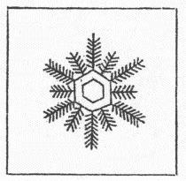
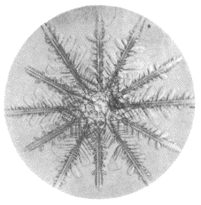

| 十二花の雪 | |
| 中谷 宇吉郎 | |
| 青空文庫 (2017) | |
十二花の雪
中谷宇吉郎
六華豊年の兆という言葉がある位、雪の結晶といえば六花ときまっているように思われているが、中には十二花のものもある。第２図の写真は一九三四年の冬十勝岳で撮られた十二花の結晶の一例であるが、その外に、三花四花などの結晶も案外珍しくない。
十二花の雪は実は天保三年刊行の土井利位
の『雪華図説』に立派な摸写が出ている。第１図はそれを転載したもので、長短二種の枝が交互に出ている点に注目すべきである。この結晶は六花二個が重って出来ているので、土井利位の観察の正当であったことは第２図をよく見れば分る。
もっとも虫目金 で見てただ摸写しただけであるから、それだけでは科学的価値がないという人があるかも知れない。しかし、自然のある珍しい現象を発見することは、案外科学的研究の端緒ではなくて、その窮極であるのかも知れない。それは科学の目的の定義が決まるまでは分らないことなのである。
（昭和十一年二月『東京朝日新聞』）

第１図

第２図
底本：「中谷宇吉郎集 第一巻」岩波書店
２０００（平成12
）年10
月5
日第1
刷発行
底本の親本：「冬の華」岩波書店
１９３８（昭和13
）年9
月10
日刊
初出：「東京朝日新聞」
１９３６（昭和11
）年2
月2
日
入力：kompass
校正：砂場清隆
２０１７年1
月20
日作成
青空文庫作成ファイル：
このファイルは、インターネットの図書館、青空文庫（http://www.aozora.gr.jp/）で作られました。入力、校正、制作にあたったのは、ボランティアの皆さんです。